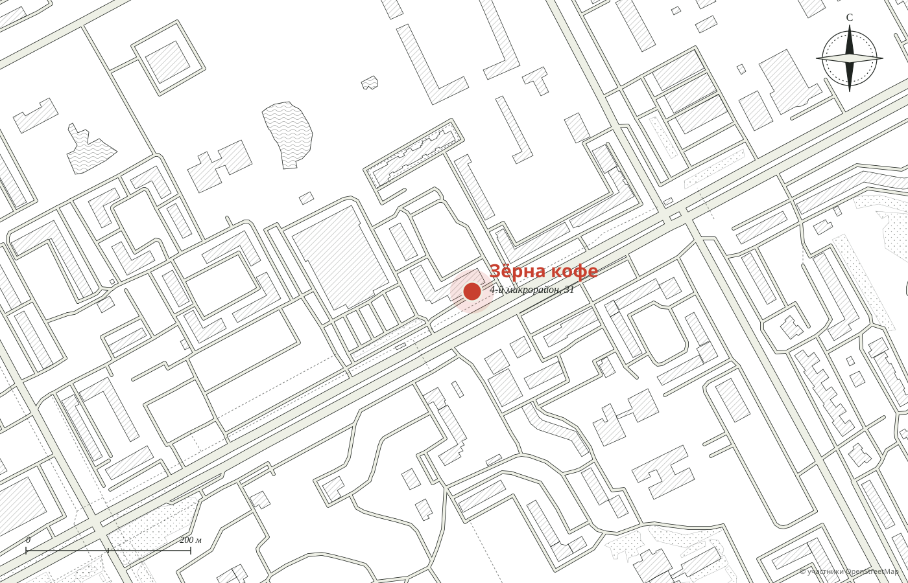

№ 1
Клубничная вафля
«Клубничные вафли вообще гигантские, даже вдвоём можно наесться»
Мария, 2ГИС
···· ₽
Демо-макет студии MERIDIAN · не является официальным сайтом заведения
Кофейни
Комбо‑завтрак с манной кашей без единого комочка, клубничные вафли размером на двоих, пряники и открытки. Бариста помнят постоянных гостей, а гости пишут им стихи.
4‑й мкр: будни 7:30 до 22:00, выходные с 9:00
Томина: будни 7:30 до 21:00, выходные с 10:00


Как созвучно
Мария пишет: «На днях была в кофейне Зёрна в Заозёрном (как созвучно), зашла туда первый раз. На удивление пространства там оказалось больше, чем кажется снаружи».
«Каждый раз, когда дорога ведёт в Заозёрный, я обязательно заезжаю в Зёрна».
Рина, 2ГИС

С 7:30 в будни
Анастасия зашла на завтрак: «Комбо это просто находка: вкусный кофе, нежная манная каша без единого комочка и блины с творогом и манго. Очень сытно».

Отзыв гостьи, 2ГИС
«Дарят мурашки от глотка,
культура напитка у них высока.
…
Софа рисует сердечко всегда»
Ответ кофейни
«Мы долго пыхтели, пытались слагать,
чтобы стихами в ответ написать…»
Бариста
Гостья написала о каждом бариста по строчке, и кофейня ответила тоже стихами. Такое в отзывах встречается нечасто.
Витрина
«Очень вкусные вафли! Есть ягодки, орешки», пишет гостья. А меню, по словам постоянных гостей, «постоянно дополняют новинками».
№ 1
«Клубничные вафли вообще гигантские, даже вдвоём можно наесться»
Мария, 2ГИС
···· ₽

№ 2
«С творогом и манго»
из комбо‑завтрака
···· ₽

№ 3
«Отдельная любовь»
Агата, 2ГИС
···· ₽
К кофе


До 13 ноября в закрепе ВКонтакте авторский какао. На сайте такие акции стоят на первом экране. Цены подставляются из вашего меню.
Курган
№1
Заозёрный · до 32 мест · детский уголок
будни 7:30 до 22:00 · выходные 9:00 до 22:00
Лучшая кофейня 2026
№2
напротив областной больницы · до 10 мест
будни 7:30 до 21:00 · выходные 10:00 до 21:00
Премия 2ГИС 2016
Статус «открыто» считается по курганскому времени. Адреса, часы и премии из карточек 2ГИС.
Что любят гости
Из отзывов гостей в 2ГИС. Наведите на слово или нажмите на него: покажем, как это выглядит.

№1 · адрес и часы
Заозёрный, первый этаж, рядом гипермаркет. Вторая кофейня на Томина, 88.

Для владельца
Адреса, часы и «открыто сейчас» для Заозёрного и Томина.
Авторский какао и новинки видно сразу, а не в закрепе.
Лучшие слова гостей, даже стихи, на одной странице.
Никаких персональных данных: политика конфиденциальности не нужна.